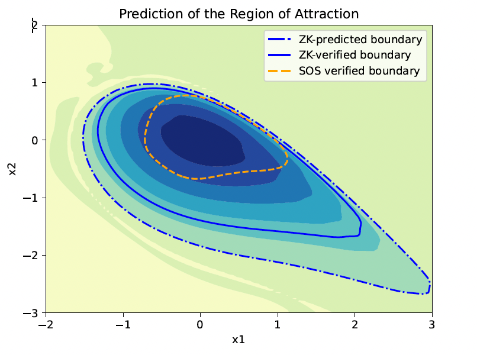

We propose a Koopman generator learning approach, the Resolvent-type method, which can potentially ease the requirements for high sampling frequency and reduce bias in the choice of dictionary test functions. The method has been successfully applied to multiple applications, such as system identification, optimal control, and learning Lyapunov certificates for unknown systems.
We have also proposed an alternative Koopman-like operator method, namely the Zubov-Koopman operator, for predicting the stability of unknown systems. This approach enables us to approximate the system transition and indirectly estimate the solution (value function) to Zubov’s Equation. The approximator's non-trivial sub-level sets, with values ranging from (0, 1], form the exact region of attraction (ROA). This approximation is achieved by learning the operator over a fixed time interval. We demonstrate that a transformation of such an approximator can be readily utilized as a near-maximal Lyapunov function. We show that this approach reduces the amount of data and can yield desirable estimation results.

Caption: Prediction of the Region of Attraction (ROA) using the Zubov-Koopman operator (ZK) and Sum-of-Squares (SOS) for a two-machine power system.
To improve, further efforts listed below are needed.
Data efficiency analysis
Dimension reduction
Online learning adaptation
Online Learning and Control Synthesis for Reachable Paths of Unknown Nonlinear Systems
Systems across domains operate with limited information, such as uncertainties arising from an insufficient understanding of system transitions and external forces. In this research, we focus on situations where the nonlinear system is partially unknown, with our knowledge limited to its local dynamics at a single point and constraints on the rate of change of these dynamics. Based on this limited information, we aim to implement the following pipeline for the system: First, we identify a set of states, known as the Guaranteed Reachable Set (GRS), that the unknown system can provably reach within a given timeframe from the point of known information, using underapproximation proxy dynamics. Then, we specify a state on the boundary of the GRS and synthesize a controller, enabling the partially unknown system to approach the vicinity of this state.
Below is a video demonstrating autonomous waypoint navigation appied onto an autonomous vehicle using the proposed method. We show that the car can avoid unsafe regions while safely following a narrow path to its final destination. (Video credit to Taha Shafa.)
Caption: State plot of reachable predictive control for autonomous vehicles operating with unknown dynamics. Left: zoomed-in, right: normal scale. (Video credit to Taha Shafa.)
Caption: Reachable predictive control for autonomous vehicles operating with unknown dynamics. (Video credit to Taha Shafa.)